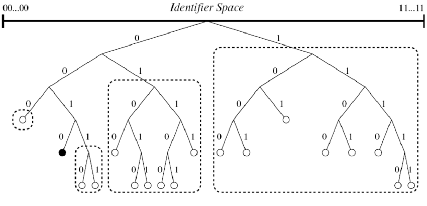

Kademlia
Architecture
Kademlia is a Peer-To-Peer Distributed Hash Table (DHT) based on the XOR metric.
- Every Kademlia Peer and key is identified by a
S-bit identifier. - Kademlia is a key-value store, where each value is stored at the
KPeers whose Peer Identifiers are closest to the Key Identifier. - The distance between two Identifiers id1 and id2 is defined as id1 XOR ids2. For example,
distance (1,4) = distance = (0b001, 0b100) = 0b001 XOR 0b100 = 0b101 = 5.
For each Peer there is a routing table (List of KBucket), it manages a number of contact to other nodes, sorting them into up to S buckets, depending on their XOR distance from the current Peer.
- If 2^ S > x ^ y >= 2^S - 1, then y is in bucket 0.
- If 2^ S-1 > x ^ y >= 2^S - 2, then y is in bucket 1
- ...
- If 2 > x ^ y >= 1, then y is in bucket S - 1.

Library
In this tutorial, we are going to explain how to use the C# library to have an up and running Kademlia server.
Open a command prompt and create a console application.
mkdir QuickStart
cd QuickStart
mkdir src
cd src
dotnet new console -n KademliaServer
Install the Nuget package FaasNet.DHT.Kademlia.Client and FaasNet.DHT.Kademlia.Core.
cd KademliaServer
dotnet add package FaasNet.DHT.Kademlia.Client
dotnet add package FaasNet.DHT.Kademlia.Core
Add the console application into the Visual Studio Solution.
cd ../..
dotnet new sln -n QuickStart
dotnet sln add ./src/KademliaServer/KademliaServer.csproj
Open the Visual Studio Solution and edit the Program.cs file.
Add a new procedure StartKademlia, it will be used to start the Kademlia.
private static async void AddRootPeer()
{
await PeerHostFactory.NewStructured(o =>
{
o.Url = "localhost";
o.Port = 50;
})
.UseUDPTransport()
.AddDHTKademliaProtocol(o =>
{
o.SeedPort = 50;
o.SeedUrl = "localhost";
o.IsSeedPeer = true;
o.KademliaPeerId = 1;
})
.Build()
.Start();
}
Add a new procedure AddPeer(int port, int peerId), it will be used to add and start a node.
private static async void AddPeer(int port, int peerId)
{
await PeerHostFactory.NewStructured(o =>
{
o.Url = "localhost";
o.Port = port;
})
.UseUDPTransport()
.AddDHTKademliaProtocol(o =>
{
o.SeedPort = 50;
o.SeedUrl = "localhost";
o.IsSeedPeer = false;
o.KademliaPeerId = peerId;
})
.Build()
.Start();
}
Add a new procedure PersistKey(long key, string value), it will be used to persist a Key and its Value into the ring.
private static async void PersistKey(long key, string value)
{
using (var kademliaClient = new UDPKademliaClient("localhost", 50))
{
await kademliaClient.StoreValue(key, value);
}
}
Add a new procedure GetKey(long key), it will be used to get the value of the key from the ring.
private static async Task<string> GetKey(long key)
{
using (var kademliaClient = new UDPKademliaClient("localhost", 50))
{
var value = await kademliaClient.FindValue(key);
return value.Value;
}
}
Add the following code to add two peers, publish a key with its value and finally display the value of the key.
AddRootPeer();
Console.WriteLine("Press enter to add a Peer");
Console.ReadLine();
AddPeer(57, 2);
Console.WriteLine("Press enter to add a Peer");
Console.ReadLine();
AddPeer(58, 5);
Console.WriteLine("Press enter to add a key");
Console.ReadLine();
PersistKey(8, "Hello");
Console.WriteLine("Press enter to display the key");
Console.ReadLine();
var key = GetKey(8).Result;
Console.WriteLine($"Key 8 is stored with the value {key}");